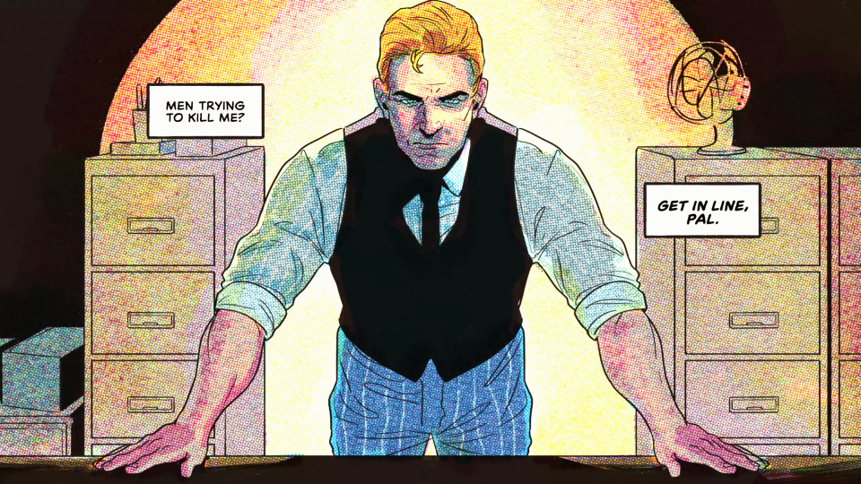

Fallen Aces is a new comic book/noir film fps shooter immersive sim created by Trey Powell and produced by New Blood, the creaters of ULTRAKILL. Fallen Aces has just been released in 2024 and is in Early Access.
Fallen Aces stars Mike Thane, a Private detective now turned wanted man by the Glassheart Gang in the city of Switchblade, and your job as Thane is to crack the case on a missing person by the name of Alexia Price and the mystery of the A.C.E.S. an old crime fighting group now disbanded and now more and more of its memebers are murdered or missing as time passes.
Fight your way through the city of Goons, Pipe Welding Mooks, Knife Wielding Hoods and what else lies before you.
Fallen Aces soundtrack was created by David Baron and inspired by the James Bonds films. Each song has been cafted to create a sense or tone in which ever levels its used in. Such as Levels 2's track has many boat noises as it is on a dock yard. However the track I've choosen is from the start of the game, in which your in Mikes apartment and is soothing chill track.
Fallen Aces is a game that has been in development hell for years. Created by Trey Powell, Fallen Aces has been in development for years. First being called Fallen Angles, Fallen Aces had a released public demo in 2021, which was a 10-15 min one level demo, but showed great progress. By December 2021, a Christmas update added the Tommy Gun and more enemies as well as Christmas themed objects and snow during the month of December. However, no updates to game were made over 3 years. The only updates mainly being clips of updated content by Trey on twitter, showing sprites, music demos, and comic strips were shown but no further updates were made to the game until 2024, in which Early access was released showing of "Episode 1".
Months later the "Turf War" update was released updating and adding more detail to episode one and completely over hauling level three with more detail and a gun shop.
Check out the podcast episode on the creator and creation on Fallen Aces!Fallen Aces legacy shows true potential for a new open sim game with a very distinct art style (It takes weeks just to make the animations for a single character!) with its comic book art style and its detailed levels, I'm excited to see what New Blood has next. I heard next, that their maybe plans of the Level creator being added in next update but there is no release date.